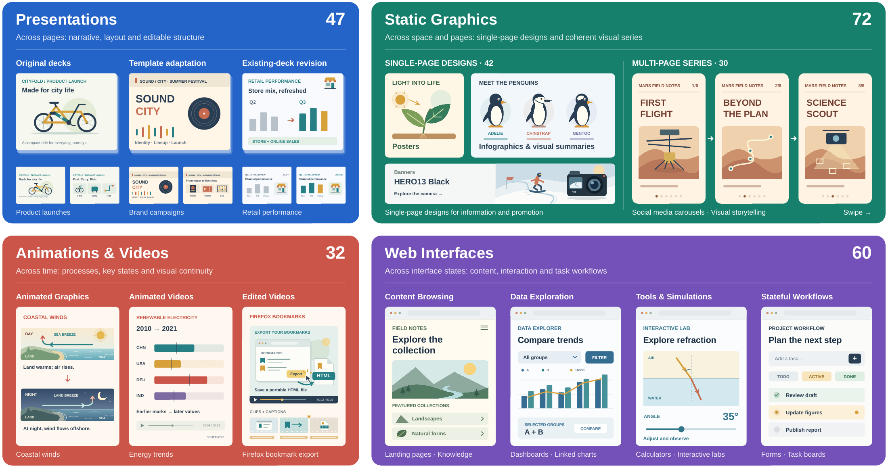
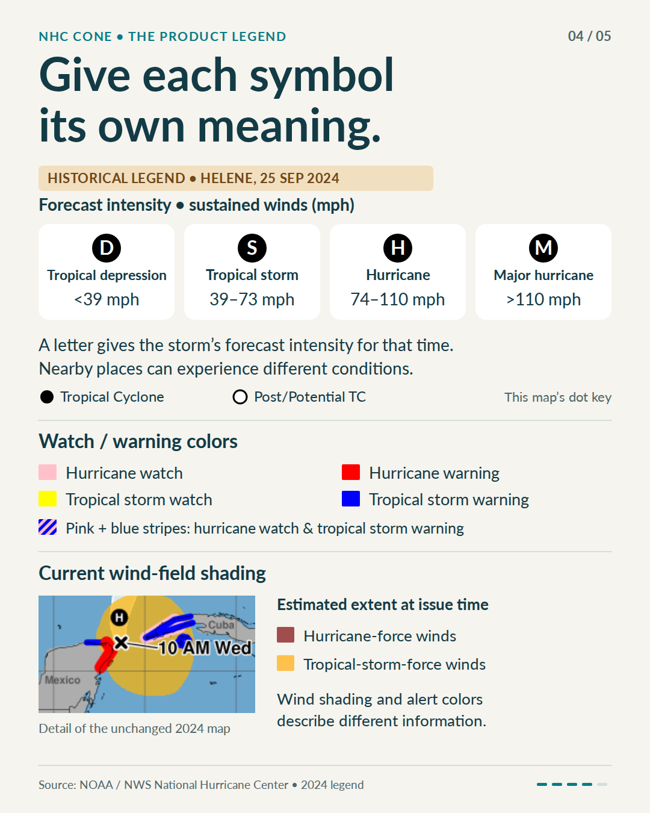
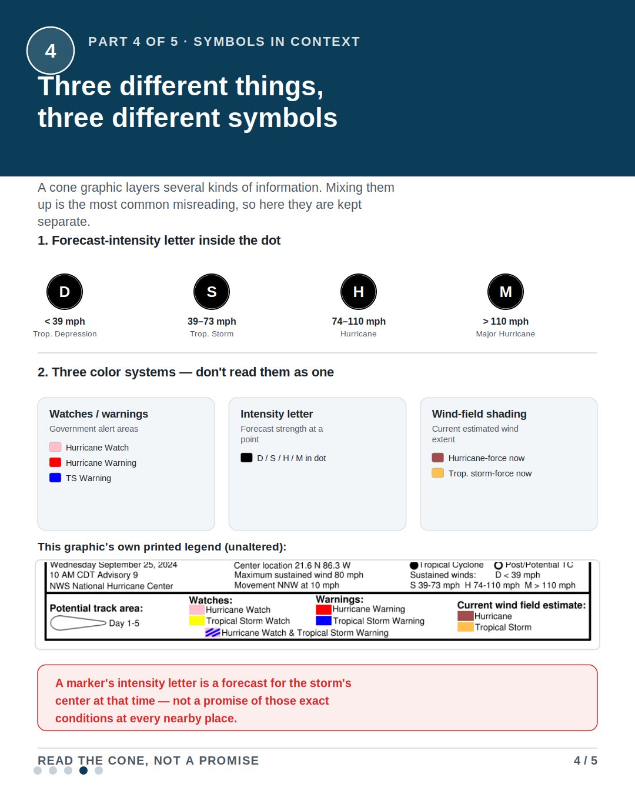

Presentations
Narrative, layout, and editable structure across slides.
- Original decks 31
- Template adaptation 14
- Existing-deck revision 2
A benchmark for visual artifact authoring
Evaluating authoring capabilities across artifact families.
Assessing requirement fulfillment and how authoring choices serve the audience, purpose, and medium.

01 / Overview
Visual artifact tasks ask agents to turn task specifications and source materials into useful outputs. Comparing artifact families reveals whether authoring strengths generalize across media, while assessing how content, organization, and presentation serve the intended audience and purpose.
VisualArtifactSpec 1.0 (VAS) comprises 211 creation and modification tasks across four artifact families. Evaluation separates Task Fulfillment from Artifact Performance, using shared criteria, task-specific rating anchors, and inspectable evidence.
02 / Leaderboard
Across nine model–harness configurations, high Task Fulfillment can coexist with deficiencies in Artifact Performance. Compare dimensions and artifact families to examine strengths and weaknesses that overall scores can obscure.


Configurations are ordered by total score across all three views.
Score ranges: B, 0–50; Δ, −50 to +50; S, −50 to 100. Valid tasks reports scored-task coverage out of 211.
CP / FN: passed acceptance groups (%), with FN evaluated only where applicable. C / O / V / D: mean dimension point scores (−50 to +50), after mapping each criterion rating to points and averaging within its dimension. Performance weights are 25% / 15% / 50% / 10%.
Each family reports mean total score S (−50 to 100). Headers show benchmark task counts, not valid-score coverage. Overall scores combine the four artifact families.
03 / Benchmark
Task categories follow the primary objective, rather than the file extension. HTML may encode slides, an animation, or a website.
Narrative, layout, and editable structure across slides.
Hierarchy and coherent expression across space and pages.
Processes, key states, and visual continuity across time.
Content, interaction, and workflows across interface states.
Each task has one primary application purpose, independently of its artifact family.
04 / Context matters
Required information is retained while audience, purpose, and medium shape content emphasis, information organization, and visual presentation.

05 / Evaluation
Task Fulfillment and Artifact Performance are assessed separately. Judgments link criteria to source materials and native, rendered, temporal, or interaction evidence, as appropriate to the artifact.
Base score · 0 to 50
Does the artifact meet the specified obligations?
Equal weight across acceptance groups. A group passes only when all its requirements pass.
Adjustment · −50 to +50
How well do its authoring choices serve the intended audience, purpose, and medium?
18 shared criteria, instantiated through task-specific rating anchors for the intended audience, purpose, and medium. Ratings range from −3 to +3; zero denotes complete basic satisfaction without substantive defects, but ordinary quality. Ratings are mapped to points before weighted aggregation.
S = B + Δ
F is the fraction of passed acceptance groups.
pd is the dimension point score (−50 to +50).
Negative totals are retained; theoretical range: −50 to 100.
06 / Construction
211 tasks selected from 322 candidates, considering coverage, evaluability, and source diversity.

07 / Case studies
Inspect eight evaluated outputs across four complex tasks: research evidence, mobile reading, scientific motion, and interactive state. Compare the original artifacts with their recorded assessments.
Four tasks · Eight outputs English artifacts · Hugging Face release IDs · Current v3 scoring
presentations-001 · English
Create an eight-slide ResNet research-group presentation: explain the residual mechanism, reproduce experimental comparisons, distinguish evaluation protocols, and discuss limitations in an editable deck.
Both outputs satisfy the acceptance groups. The comparison exposes a subtler difference: whether experimental conditions stay attached to the numbers they qualify.
CP: 10/10 groups passed. C/O/V/D are current-protocol points (−50 to +50).
CP: 10/10 groups passed. C/O/V/D are current-protocol points (−50 to +50).
static-graphics-099 · English
Design five phone-first educational cards explaining hurricane forecast cones, historical uncertainty, map symbols, and practical interpretation for a general audience.
Both outputs pass the fulfillment checks. At the prescribed 390-pixel inspection width, the stronger carousel still has small supporting labels; the weaker one repeatedly makes essential explanations difficult to read.
CP: 22/22 groups passed. C/O/V/D are current-protocol points (−50 to +50).

CP: 22/22 groups passed. C/O/V/D are current-protocol points (−50 to +50).

animations-videos-121 · English
Produce a 30-second teaching animation of the first three standing-wave modes, with a shared clock, fixed nodes, tracked material points, cycle comparisons, and a traveling-wave decomposition.
The saved evaluations give both artifacts full fulfillment. Temporal inspection distinguishes a coherent model from a marker that separates from its own curve: a static frame alone is not enough.
CP: 15/15 groups passed. C/O/V/D are current-protocol points (−50 to +50).
CP: 15/15 groups passed. C/O/V/D are current-protocol points (−50 to +50).
web-interfaces-042 · English
Build a two-dimensional refraction lab with synchronized controls, critical-angle and total-internal-reflection states, immutable saved experiments, side-by-side comparison, export, and recoverable data-loading failures.
A multi-state tool tests more than the opening screen. Compare live geometry, saved-state behavior, narrow-screen reading, and the recorded response to a failed example-data load.
CP: 8/8 groups passed · FN: 5/5 groups passed. C/O/V/D are current-protocol points (−50 to +50).
Try E2, then E3. Save both states and compare them; return to 41.8° and 42° to inspect the transition. The lab scrolls independently.
CP: 8/8 groups passed · FN: 4/5 groups passed. C/O/V/D are current-protocol points (−50 to +50).
Try E2, then E3. Save both states and compare them; return to 41.8° and 42° to inspect the transition. The lab scrolls independently.
Selected comparisons illustrate strengths and limitations, not average model quality. Scores and criterion judgments come from the saved evaluations; no new grading is implied. Slides and cards show full original previews; videos and labs are embedded. Inspect scores, judgments, and artifact hashes ↗
08 / Citation
If you use VisualArtifactSpec in your research, please cite our report.
@misc{ouyang2026visualartifactspec10evaluatingvisual,
title={VisualArtifactSpec 1.0: Evaluating Visual Artifacts under Task Specifications},
author={Shuyi Ouyang and Xiaojun Tang and Zijian Zou and Xintong Zhang and Mingli Song and Guannan Zhang and Hongwei Xue},
year={2026},
eprint={2611.21382},
archivePrefix={arXiv},
primaryClass={cs.AI},
url={https://arxiv.org/abs/2611.21382},
}